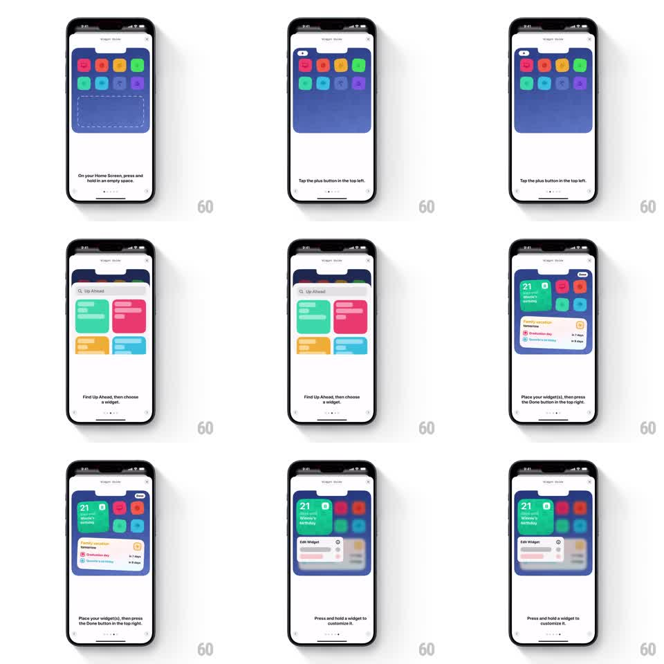

Media
Frame-by-frame

Rebuild this animation 1:1: Up Ahead's widget setup guide - a "Widget Guide" sheet that walks through adding an iOS Home Screen widget, each step a looping simulation of the real interaction (jiggle mode, the plus button, the widget gallery, placement, customization) with caption text below.

Rebuild this animation 1:1: Up Ahead's widget setup guide - a "Widget Guide" sheet that walks through adding an iOS Home Screen widget, each step a looping simulation of the real interaction (jiggle mode, the plus button, the widget gallery, placement, customization) with caption text below.
## Integration
Integration: stack-agnostic spec - springs given as stiffness/damping, timed motions as duration + curve; map every value to your framework and animation library of choice.
## Scene
A white sheet titled "Widget Guide". Inside, a simulated iOS Home Screen in blue with rows of colorful app icons. Five steps, one caption each: press and hold an empty space (icons jiggle, a dashed widget placeholder appears); tap the plus button top left; find Up Ahead and choose a widget (a gallery of green, pink, yellow, and blue widget cards slides up); place the widget and press Done top right (the widget drops into the grid, icons reflowing); press and hold a widget to customize it (an "Edit Widget" panel pops over the home screen). Page dots and captions sit below the simulation, with chevron buttons to move between steps.
## Motion spec
Pattern: step-by-step simulated OS walkthrough, gesture to advance.
- Each step loops its own simulation (~2s cycles): the jiggle wiggles every icon a couple degrees out of phase, the plus button pulses, the gallery sheet slides up and back, the widget drops in with a spring (stiffness 300 damping 20) as icons shuffle aside.
- Advancing a step crossfades the simulation and slides the caption in from the direction of travel (300ms, ease-out); the page dots update immediately.
- The simulated home screen keeps real iOS behaviors: jiggle mode, reflow, the Done button appearing top right.
- The sheet stays at a fixed detent throughout.
## Calibration
- The simulation is faithful to iOS - jiggle, gallery, and edit panel all match the real system.
- Captions are imperative one-liners ("Tap the plus button in the top left."), one per step.
## Reduced motion
Simulations hold still; steps crossfade.
## Don't miss
- The dashed placeholder marks the empty widget slot before anything is placed.
- The edit step shows the widget's own settings panel, not a generic menu.